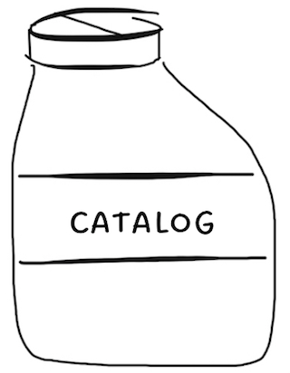

| Artist | Album | Title | Recording |
|---|---|---|---|
| Kirsten Opstad | Frost | So Good So Far | Listen |
| Kirsten Opstad | Frost | Coffee at Sunset | Listen |
| Kirsten Opstad | Frost | High Sea | Listen |
| Kirsten Opstad | Hunter | You Oughta Leave | Listen |
| Kirsten Opstad | Hunter | Better Than Summer | Listen |
| Kirsten Opstad | Hunter | 1996* | Listen |
| Kirsten Opstad | Harvest | It's Happening | Listen |
| Kirsten Opstad | Harvest | The Creator | Listen |
| Kirsten Opstad | Harvest | Under the Ace | Listen |
| Kirsten Opstad | Buck | Love Is Leaving | Listen |
| Kirsten Opstad | Buck | Cowboy Devotional | Listen |
| Kirsten Opstad | Buck | Kaleidoscope | Listen |
| Kirsten Opstad | Sturgeon | Miss This | Listen |
| Kirsten Opstad | Sturgeon | The Hits | Listen |
| Kirsten Opstad | Sturgeon | Sick Ride | Listen |
| Kirsten Opstad | Strawberry | Granite & Evergreen | Listen |
| Kirsten Opstad | Strawberry | Hope Hangs Heavy | Listen |
| Kirsten Opstad | Strawberry | Was Anyone Ever (So Young) | Listen |
| Kirsten Opstad | Strawberry | Stone Fruit Steve Austin | Listen |
| Kirsten Opstad | Strawberry | Hope Hangs Heavy (Reprise) | Listen |
| Kirsten Opstad | Strawberry | Explain Yourself | Listen |
| Kirsten Opstad | Sound I Make | The Sound I Make Loving You | Listen |
| Kirsten Opstad | Sound I Make | Underwater | Listen |
| Kirsten Opstad | Sound I Make | Take Cover | Listen |
| Kirsten Opstad | Sound I Make | Oh What You Owe | Listen |
| Kirsten Opstad | Sound I Make | Goodnight Mitten | Listen |
| Kirsten Opstad | Stay Strangers | About It | Listen |
| Kirsten Opstad | Stay Strangers | Cleanest Air | Listen |
| Kirsten Opstad | Stay Strangers | Frame | Listen |
| Kirsten Opstad | Stay Strangers | In Name | Listen |
| Kirsten Opstad | Stay Strangers | Money Now | Listen |
| Kirsten Opstad | Stay Strangers | Flood | Listen |
| Kirsten Opstad | Stay Strangers | End Begin | Listen |
| Kirsten Opstad | Stay Strangers | Permanent | Listen |
| Kirsten Opstad | Stay Strangers | Over Again | Listen |
| Kirsten Opstad | Fear of Swimming | Magic Eye | Listen |
| Kirsten Opstad | Fear of Swimming | Hurry Up | Listen |
| Kirsten Opstad | Fear of Swimming | Back to Sleep | Listen |
| Kirsten Opstad | Fear of Swimming | Better Than You Are | Listen |
| Kirsten Opstad | Fear of Swimming | Sleeping With Strangers | Listen |
| Kirsten Opstad | Fear of Swimming | Unkeepable Oath | Listen |
| Kirsten Opstad | Fear of Swimming | Fear of Swimming | Listen |
| Kirsten Opstad | Fear of Swimming | Safe & Steady | Listen |
| Kirsten Opstad | Fear of Swimming | Blankets | Listen |
| Kirsten Opstad | Fear of Swimming | Stay Awake | Listen |
| Kirsten Opstad | Fear of Swimming | Fight or Flight | Listen |
| Kirsten Opstad | Girl Hopping | Girl Hopping | |
| Kirsten Opstad | Girl Hopping | Hamburger Mary's | |
| Kirsten Opstad | Girl Hopping | Backfire | |
| Kirsten Opstad | Girl Hopping | Shoes, Bikes, Cash | |
| Kirsten Opstad | Girl Hopping | Miss You Less | |
| Kirsten Opstad | Girl Hopping | This City is an Open Wound | |
| Kirsten Opstad | Girl Hopping | Making Messes | |
| Kirsten Opstad | A Little Unhappy EP | Second Hand Love | |
| Kirsten Opstad | A Little Unhappy EP | Our Story | |
| Kirsten Opstad | A Little Unhappy EP | A Little Unhappy | |
| Kirsten Opstad | A Little Unhappy EP | Change Me | |
| Kirsten Opstad | A Little Unhappy EP | Reservations | |
| Kirsten Opstad | A Little Unhappy EP | Fool My Tongue | |
| Kirsten Opstad | A Little Unhappy EP | Grave | |
| Kirsten Opstad | A Little Unhappy EP | Living to Work | |
| Kirsten Opstad | More of the Same | Hard Sell | |
| Kirsten Opstad | More of the Same | Back to Sleep | |
| Kirsten Opstad | More of the Same | Go For Blood | |
| Kirsten Opstad | More of the Same | Too Cool For School | |
| Kirsten Opstad | More of the Same | The Cleanest Air | |
| Kirsten Opstad | More of the Same | The Best We Could | |
| Kirsten Opstad | More of the Same | Fight to Kill | |
| Kirsten Opstad | More of the Same | Little Tiny Changes | |
| Kirsten Opstad | More of the Same | Rehab | |
| Kirsten Opstad | More of the Same | Paul Bunyan | |
| The Crazy Exes from Hell | Keep Your Stupid Moon | When You Stop the Moon Stops | |
| The Crazy Exes from Hell | Keep Your Stupid Moon | Phone Tag | |
| The Crazy Exes from Hell | Keep Your Stupid Moon | I Want to Be Alone | |
| The Crazy Exes from Hell | Keep Your Stupid Moon | Who the Fuck | |
| The Crazy Exes from Hell | Keep Your Stupid Moon | Summer in Somerville | |
| The Crazy Exes from Hell | Keep Your Stupid Moon | You Lost the Right to Fight the Good Fight | |
| Kirsten Opstad | Short Sappy Songs | Embracing My Vices | |
| Kirsten Opstad | Short Sappy Songs | Keep Your Standards Low! | |
| Kirsten Opstad | Short Sappy Songs | Better Things | |
| Kirsten Opstad | Short Sappy Songs | Stayed Home | |
| Kirsten Opstad | Short Sappy Songs | Everything Happens for a Reason | |
| Kirsten Opstad | Short Sappy Songs | Orange County | |
| Kirsten Opstad | Short Sappy Songs | What It's Like | |
| Kirsten Opstad | Short Sappy Songs | Holy Ground | |
| Kirsten Opstad | Short Sappy Songs | Sheets | |
| Kirsten Opstad | Short Sappy Songs | Friend Crush |
© Kirsten Opstad 2022
℗ Night Soup 2022
All Rights Reserved. Night Soup is represented by ASCAP and is a registered affiliate of HFA. Contact for liscening inquiries.